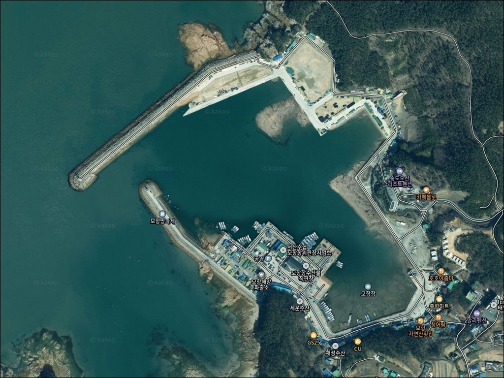
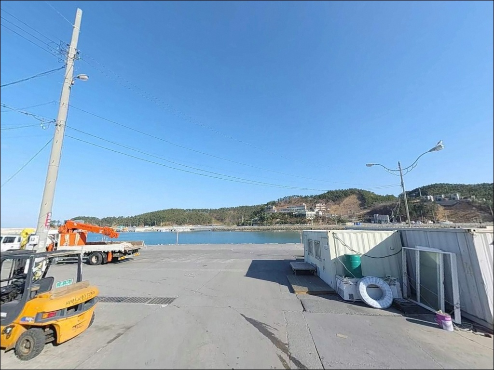
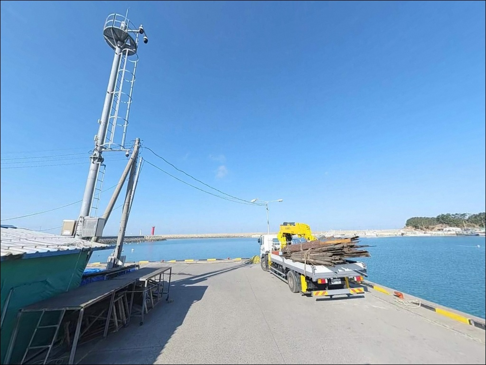
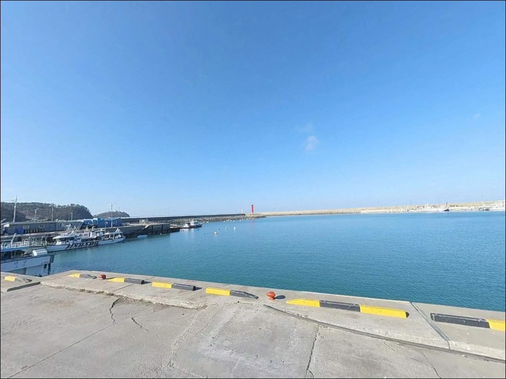
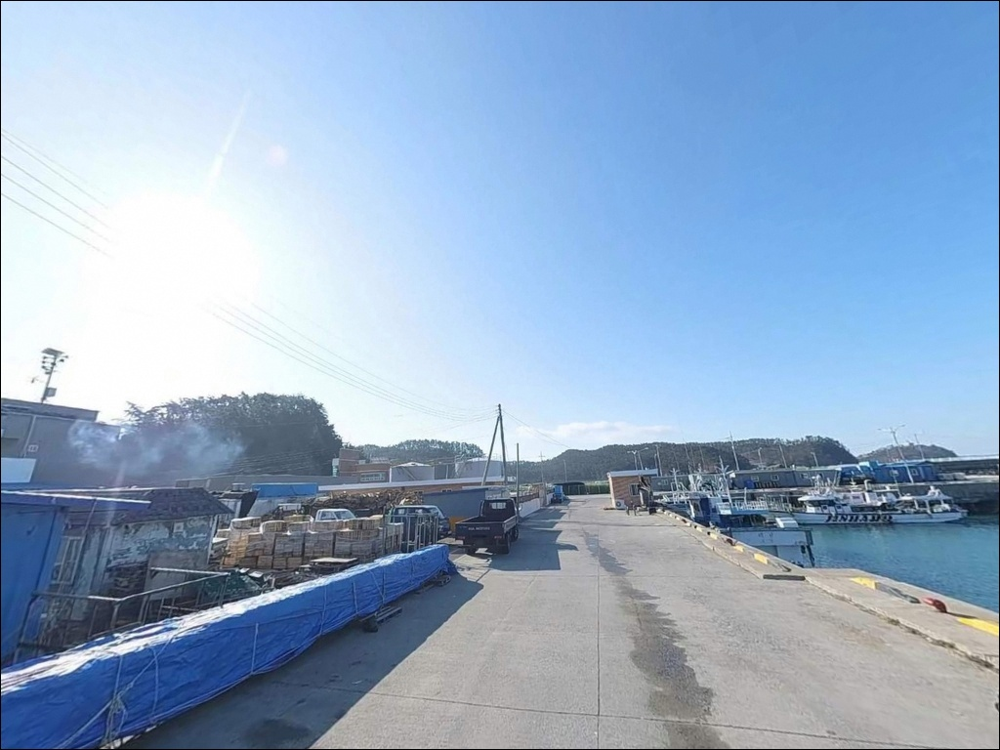
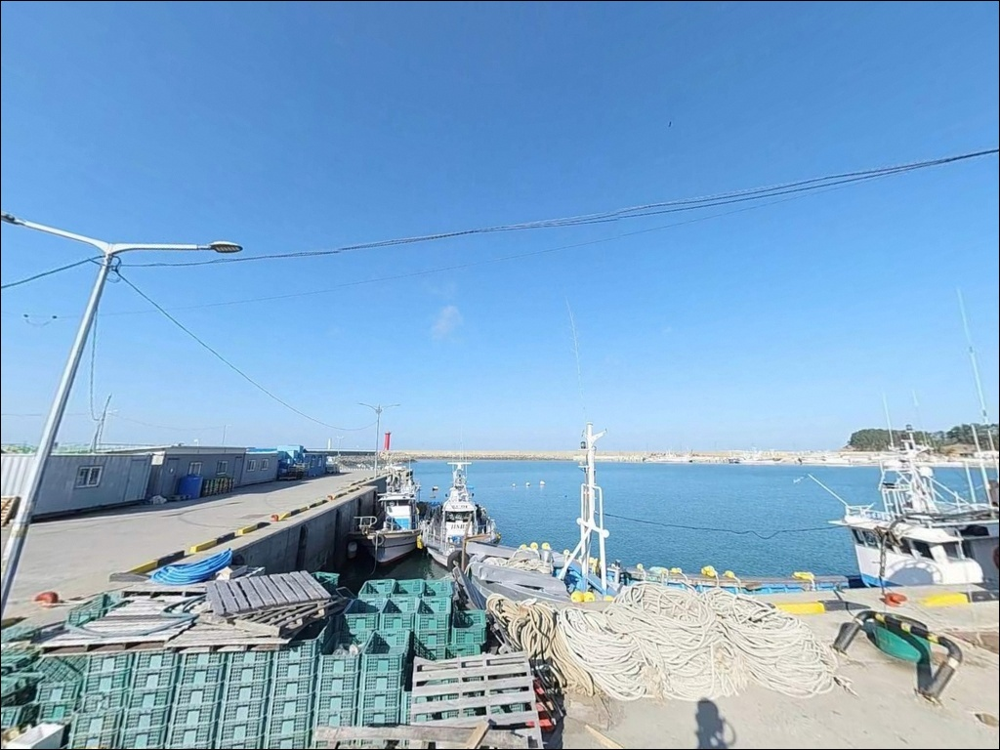
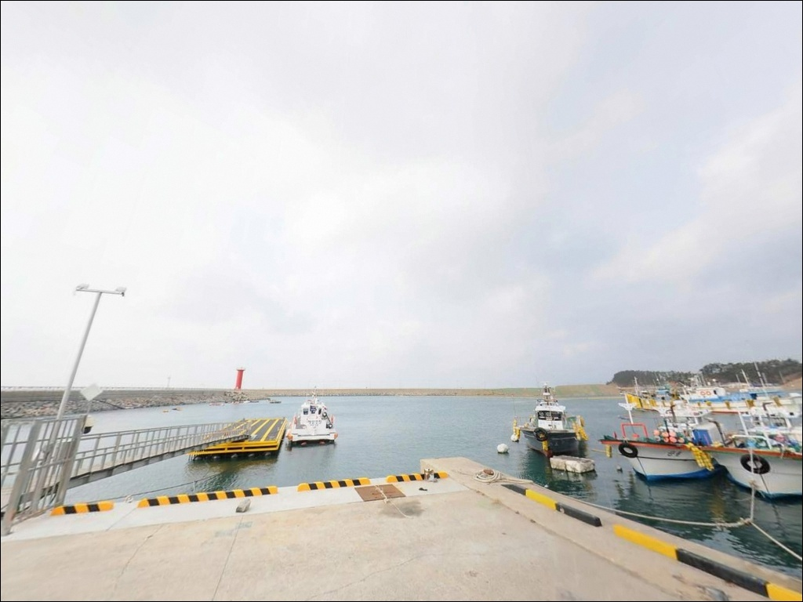
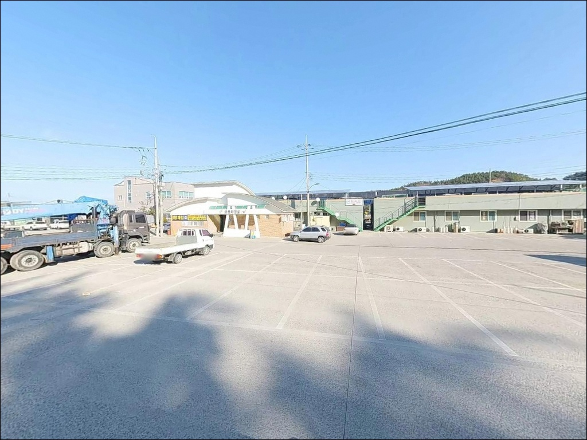
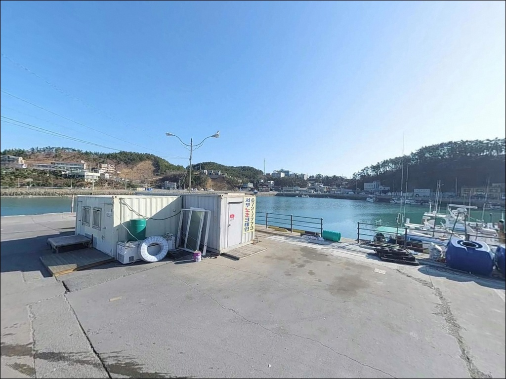

모항항 (모항방파제), 충남 태안군 차박, 낚시 겸용 해안 포인트


포인트 안내
모항항
충남 태안군 소원면 모항리 495-25
모항항 물양장 저지대에 주차하고 낚시에 집중하다 보면,
대조기 만조 타이밍에 차량이 침수 위기에 처하는 상황이 생깁니다.
서해 특성상 조차가 크고
사리 전후 만조 수위가 빠르게 올라오는 구조라,
진입 전 주차 위치와 물때 확인이
이 포인트에서 가장 먼저 해야 할 판단입니다.
이 글은 모항항의 방파제 구조와 낚시 포인트 조건,
진입·주차 환경, 차박 여건에 집중합니다.
조황 단정이나 특정 어종 보장은
이 글의 범위에 포함되지 않습니다.

1. 진입 동선과 포인트 접근성
모항항은 가락굴삼거리에서 약 900m 구간의 포장도로를 따라 진입합니다.
2차선 수준의 도로가 항구 입구까지 이어져 있어
일반 승용차나 소형 SUV 기준으로는 진입에 큰 어려움이 없는 편입니다.
국가어항으로 지정된 항구인 만큼
캠핑카·루프탑 차량도 진입 자체는 가능한 수준으로 보입니다.
회차 공간은 방파제 입구 주변의 넓은 주차 공간 덕에
소형~중형 차량 기준으로 무난하게 돌아 나올 수 있습니다.
주차 후보는 방파제 입구 부근 공터,
물양장 인근 평탄 공간,
수산물직판장 주변 공간 등이 있습니다.
단, 어선 작업 구역과 혼용되는 공간이 많아
어선 이동 동선을 막지 않는 자리를 먼저 찾아야 합니다.
물양장 저지대는 대조기 만조 시 침수 가능성이 있는 구역입니다.
태안해경이 사리 전후 이 구역에서 주기적으로 계도 활동을 펼칠 만큼
실제 사례가 있는 주의사항입니다.
출발 전 바다타임에서 당일 만조 수위와 사리 여부를 확인한 뒤,
저지대가 아닌 높은 지면에 주차하는 것이 기본 조건입니다.

2. 차박 환경과 야간 체류 여건
모항항은 국가어항 특성상 수산물직판장·식당·상가가 함께 들어선 구역입니다.
야간에도 선박 입출항과 작업이 이어지는 경우가 있어
외딴 포인트처럼 조용히 머무는 분위기는 아닙니다.
차박을 계획한다면 상가 앞이나 어선 통행로 인근은 피하는 편이 좋고,
방파제 입구에서 가장 어업 활동 구역과 멀리 떨어진 자리를 찾아야 합니다.
국가어항 구조상 항 내 가로등이 있는 편이라
완전한 암흑은 아닙니다.
외항 방파제 끝단 쪽은 조명이 적어 어두울 수 있어
야간 낚시 시 개인 헤드랜턴은 필수입니다.
서해 특성상 외항 노출 방향에서 바람이 세지는 날이 많으므로,
차량 방향과 바람 방향을 고려한 주차가 체류 편의성에 영향을 줍니다.
차박이란 차량을 숙박 공간으로 활용하며 현장에서 하룻밤 머무는 여행 방식입니다.
모항항은 인프라 편의성은 높지만 프라이버시는 제한적인 환경입니다.
단순 낚시 후 취침 수준으로 접근하는 것이 현실적이며,
보다 조용한 차박 환경을 원한다면
만리포해수욕장 인근 주차 공간을 대안으로 고려할 수 있습니다.


3. 주변 편의시설 및 인프라 현황
모항항은 서해권 방파제 낚시 포인트 중
편의 인프라가 잘 갖춰진 편에 속합니다.
항 주변에 모항항 수산물직판장이 있어
낚시 후 갓 잡아 온 해산물을 현장에서 구입할 수 있습니다.
GS25 편의점이 항구 내에 있어
간단한 먹거리와 생수, 낚시 소품은 현장에서 보완이 가능합니다.
반경 3km 이내에는 만리포 해수욕장이 있으며,
만리포 일대에는 식당, 횟집, 숙박 시설이 모여 있습니다.
출조 전 얼음과 낚시 채비를 추가로 준비해야 한다면
만리포 상권을 이용하는 동선이 효율적입니다.
응급 상황 발생 시 해양경찰 모항파출소가
반경 1km 이내에 위치해 있습니다.
단, 수산물직판장과 식당 주변은 유동인구가 상시 있는 구역입니다.
낚시 채비 쓰레기와 소음에 신경 써야 하고,
취사 등은 공용 공간 매너 수준에서 판단하는 것이 맞습니다.

4. 진입 전 반드시 챙겨야 할 준비사항
가장 먼저 확인할 것은 물때와 사리 여부입니다.
서해는 조차가 크고 조류 변화 속도가 빠른 해역입니다.
바다타임에서 모항항 기준 물때를 확인하고,
대조기 만조 타이밍과 주차 위치를 미리 연결해서 판단하는 것이 기본입니다.
사리 전후 만조 시간대에 물양장 저지대는 차량 접근을 삼가야 합니다.
방파제 외항 측에는 테트라포드가 설치되어 있으나,
관리 측에서 가드레일을 설치해 테트라포드 진입을 막고 있습니다.
낚시는 가드레일 안쪽 발판 위에서만 진행해야 하며,
이 구간은 발판이 비교적 안정적인 편입니다.
외항 노출 구간은 파도와 바람 영향을 직접 받으므로
기상 예보를 당일 아침에 다시 한번 확인하는 것이 좋습니다.
어종과 관계없이 방파제 낚시에서 구명조끼는 기본 장비입니다.
야간 낚시라면 헤드랜턴도 반드시 챙겨야 하고,
암초 지형이 있는 외항 중간 구간은
밑걸림이 심한 편이므로 여분 채비를 넉넉하게 준비하는 것이 맞습니다.

5. 낚시 포인트가 달라지는 지형 구조
모항항의 핵심은 북방파제 480m와 남방파제 355m가 만드는
외항·내항 이중 구조입니다.
북방파제는 석축(내항 쪽)과 테트라포드(외항 쪽)로 나뉘며,
낚시 가능 구간인 슬로프와 석축 구역이
길이 방향 거의 전 구간에 걸쳐 형성되어 있습니다.
외항에서 들어오는 조류가 방파제 끝단 방향으로 흘러들어
방파제 끝단이 입질이 살아나는 자리로 알려진 이유가 여기에 있습니다.
내항 쪽은 잔잔한 수면이 유지되는 편으로,
항내 선착장 부근 수심은 약 4m 내외로 추정됩니다.
완만한 수심에 퇴적층이 쌓이기 좋은 구조라
내항 쪽은 원투로 바닥을 노리는 방식에 잘 맞는 편입니다.
외항 중간 지점 흰 등대 전후 구간은
암초 구조로 밑걸림이 심한 구역으로 알려져 있어
채비 손실을 감안하고 진입해야 합니다.
인근 가의도 방면 수심은 약 4~7m 수준으로 파악됩니다.
방파제 끝단 외항 방향은 수심이 깊어지는 구간일 가능성이 있으며,
조류 흐름이 집중되는 항 입구 경계 구간도
탐색해볼 만한 자리입니다.
최신 조황은 가기 전에 반드시 검색해 보시기 바랍니다.


6. 외항 자리 선택 기준이 달라지는 낚시 스타일
이 포인트에서 가장 활용 폭이 넓은 방식은 원투낚시입니다.
북방파제 슬로프 구간은 발판이 넓고 평편해
장시간 원투낚시를 운영하기에 무리가 없습니다.
등대 밑 모래바닥 구간은 도다리 포인트로 알려져 있으며,
내항 쪽 원투 자리에서는 붕장어도 기대해볼 수 있는 편입니다.
조류가 느려지는 정조 전후 타이밍에
채비를 멀리 보내 바닥을 탐색하는 방식이 기본 전략입니다.
에깅이란 갑오징어·무늬오징어를 대상으로 에기(인조 미끼)를 사용하는 루어낚시 방식입니다.
서해 에깅 시즌인 가을(9~11월)에는 큰 방파제 슬로프와 석축 구간이
갑오징어 첫 입질을 확인하는 자리로 활용됩니다.
석축 끝 경계 구간은 조류 흐름이 바뀌는 지점으로
에깅 채비가 힘을 발휘하는 구조 조건을 갖추고 있습니다.
루어낚시는 외항 쪽 테트라포드 경계 구간과
방파제 끝단에서 우럭과 노래미를 노리는 방식이 어울립니다.
태안군 공식 자료에서도 모항항을 우럭낚시터로 소개할 만큼
루어 방식과 지형 조합이 잘 맞는 편입니다.
찌낚시는 내항 쪽 잔잔한 수면을 활용하는 방식으로,
학공치나 고등어 시즌에 내항 구간을 노리는 패턴이 맞습니다.
모항항을 출발지로 하는 선상낚시 출조도 운영되고 있어
참돔·광어·쭈꾸미 등 다양한 방식을 병행할 수 있는 곳입니다.

7. 모항항이 여의치 않을 때 대안 동선
모항항 방파제가 혼잡하거나
기상 여건이 외항 쪽 진입을 허락하지 않을 때는
만리포 방파제가 첫 번째 대안입니다.
모항항에서 차량으로 약 5분 거리이며,
같은 해안선을 공유해 조황 패턴이 유사한 편입니다.
우럭낚시 명소로 알려져 있어
루어 방식을 선호하는 낚시인에게 잘 맞습니다.
모항항 남쪽 방향 약 4km 거리에는
어은돌항이 있습니다.
방파제 구조가 안정적이고 접근성이 좋은 편이라
모항항과 함께 묶어서 탐색하는 동선이 효율적입니다.
북쪽으로는 천리포항도 방파제 낚시 접근이 가능한 소규모 항구로,
가까운 거리에서 포인트 다양성을 확보할 수 있는 구간입니다.
차박 대안 장소는 만리포해수욕장 인근 주차 공간이 현실적입니다.
대규모 공영주차장과 공중화장실 인프라가 갖춰져 있어
모항항보다 차박 환경 자체는 만리포 쪽이 여유 있는 편입니다.
낚시 후 이동해서 하룻밤 머무는 방식으로 활용하는 것도 고려해볼 수 있습니다.

준비를 갖춘 만큼
모항항은 다양하게 쓸 수 있는 포인트입니다
원투낚시, 에깅, 루어낚시를 고루 즐기고 싶은 낚시인이라면
모항항의 방파제 구조는 잘 맞습니다.
480m 북방파제 전 구간이 낚시 가능한 발판을 갖추고 있고,
외항 조류를 이용하는 에깅부터
내항 원투까지 방식을 바꾸며 운영할 수 있는 구조입니다.
반면 물때 확인 없이 저지대에 주차하거나,
암초 구간에서 채비 준비 없이 진입하면
낚시 시간이 짧아지거나 채비를 모두 소진하는 상황을 맞을 수 있습니다.
물때 확인, 주차 위치 판단, 여분 채비 준비,
이 세 가지를 갖추고 오면
서해 방파제 낚시의 기본기를 다지기에
좋은 포인트로 활용할 수 있습니다.
낚시 후 수산물직판장에서 해산물 한 접시로 마무리하고,
차 안에서 하룻밤 조용히 머무는 것으로
서해 방파제 차박 낚시 여행을 완성하기에 나쁘지 않은 곳입니다.